| Update,
February 21, 2006
The
car is coming together!
Cutting
through the top of the windows:
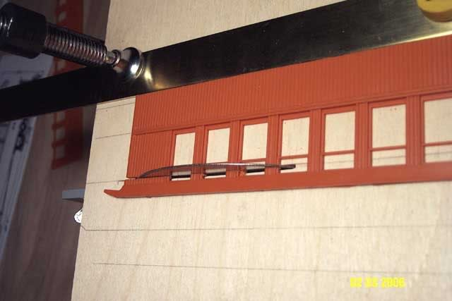
All
the tops cut off!
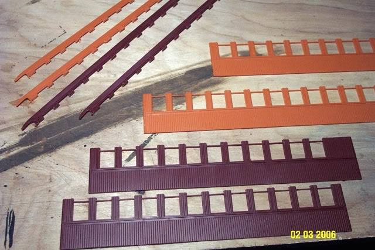
this
is another example of where my new mini powersaw was indispensable..
there
is NO way I could have made all those cuts straight, even, and *identical*
if
cutting by hand!
I got
1.5 x 1.5mm square stryene rod, cut it into 10mm lengths, and glued the
pieces into
the
remaining openings of the "small upper windows"
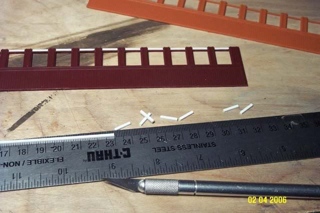
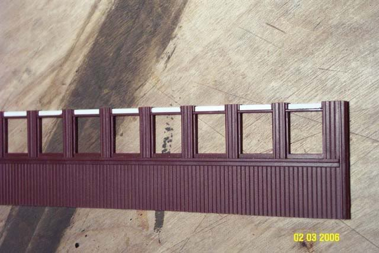
(once
the styrene strips were glued in place, I then ran the sides through the
saw
again
to even up the posts..they were slightly higher than the styrene rod,
needed
to be sliced smooth.)
The
coach bodies are cut into smaller pieces, to make one coach that is
"16
windows" long..this makes the coach just slightly shorter than the
prototype
coach #22. The difference in length cant even be seen.
I
used the "score and snap" method for these cuts, cutting through one
of
the grooves in the wood siding with an x-acto blade, then snapping.
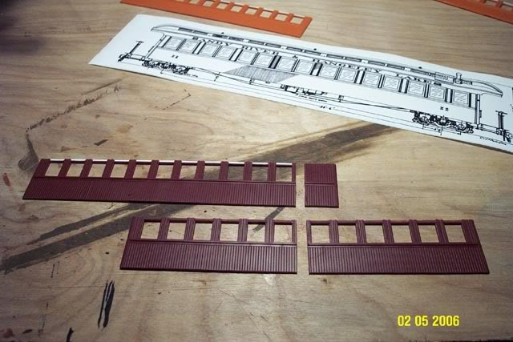
The
two new sides are glued together! 
(im
impatient...I like to paint things *before* the final model is put together! 
in
this case, I painted the glue joint to see how well it was "hidden" and
blended in with the rest of the coach side wall..I had to add a little
bit of squadron green putty, let it dry, then sand smooth..I also had to
carve back in some of the "joints" between the wood slats in the area of
the glued connection..so then I painted over everything to check to see
that it all blends nice and smooth..
and
that the glued joint "disappears"..that is why the sides are semi-painted
in the following photo..)
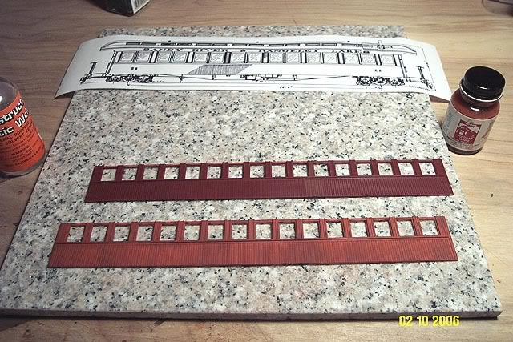
I was
thinking of scratchbuilding new ends..with windows.
but
in the end I decided to simply narrow the existing Bachmann end pieces.
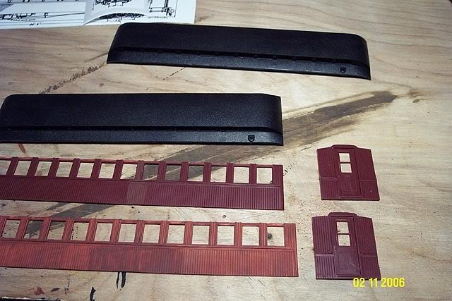
the
4 new walls are put together!
a
return to 3 dimensions..
I
bought a piece of granite tile from Home Depot, because my desk surface
isnt perfectly flat.
I
lined up the pieces with a square, so all walls are vertical, and all walls
are square to each other.
the
jars of paint and clamps kept it all together while the glue dries.
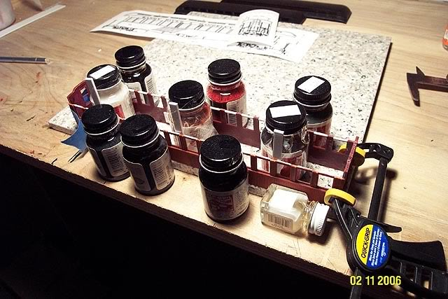
It's
looking like a coach again!
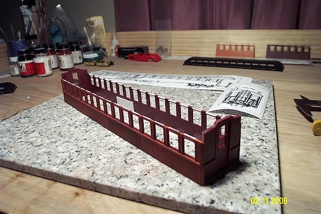
Roof
cut!
The
roof took quite a bit of work to hide the glue joint..
some
fiddly work with green putty and sanding/scraping..but in the end
it
came together nice and smooth..
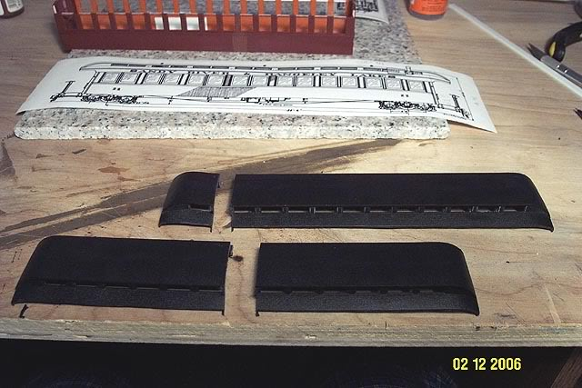
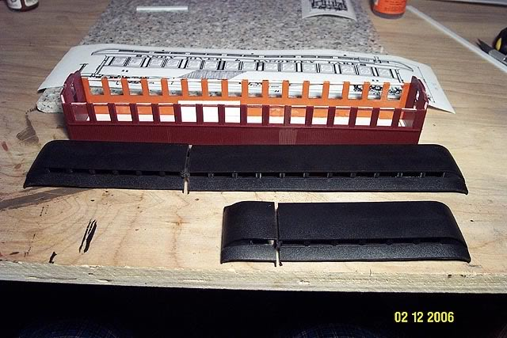
A brand
new "road name strip" was scratch built from .080 X .250 styrene.
(I
dont know the proper name for that strip! the smooth bit the railroad name
is written across..
if
anyone knows, please let me know!)
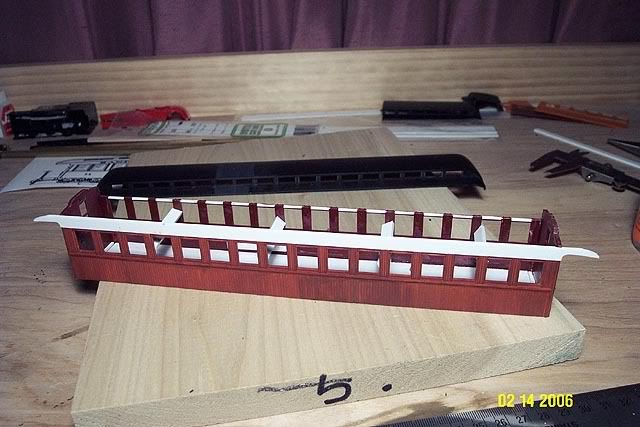
Those
4 styrene spacers inside the coach body are just there to keep the sides
from
"bowing
in" while the strip is glued to the coach body.
the
roof will take care of that problem later on.
Test
fit for the roof..it looks good!
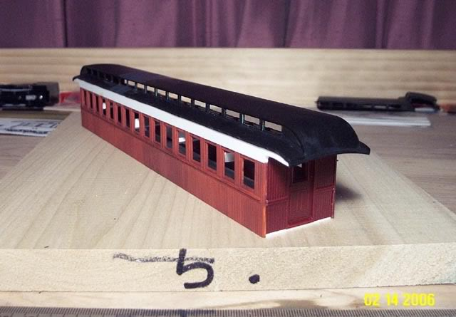
and
again..I just had to go and paint the bare white styrene!
I
need to see how it looks overall..I need things "blended" together..
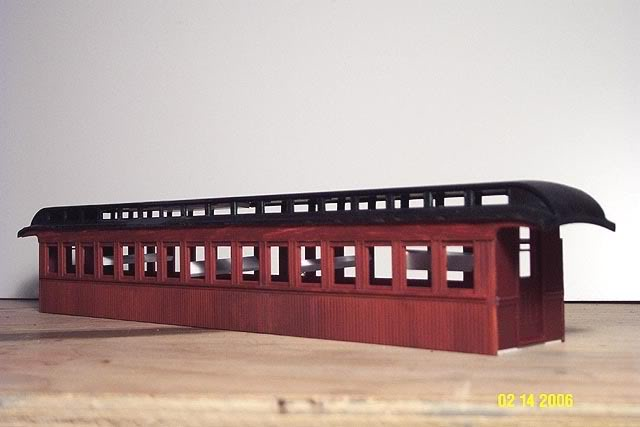
On
to Page 4! 
sscotsman@yahoo.com
Back
to Page 1 of the coach bash.
Back
to Scot's main page
|